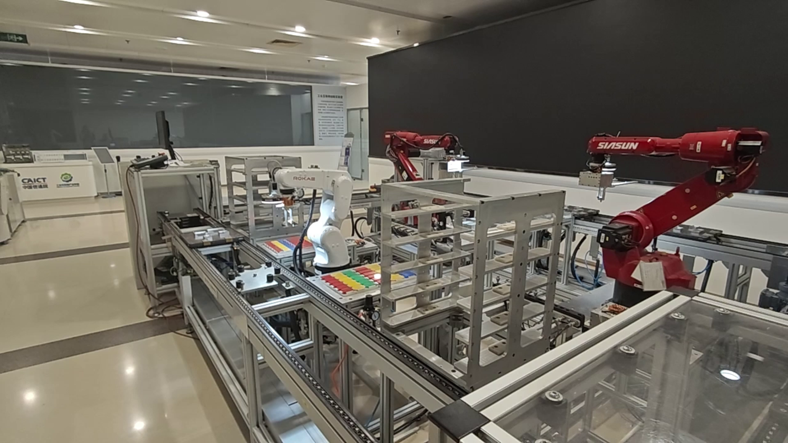
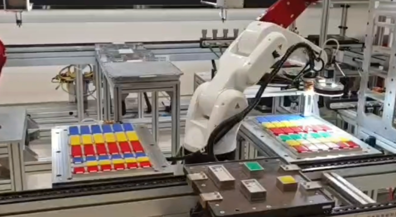
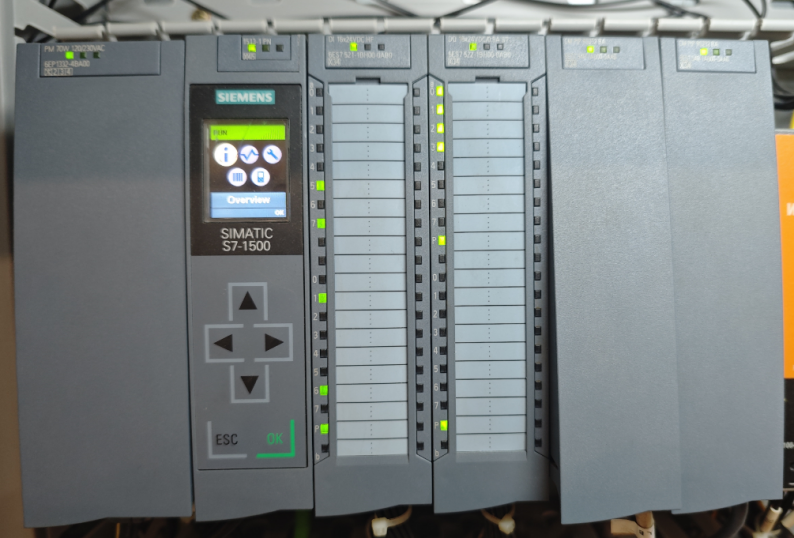
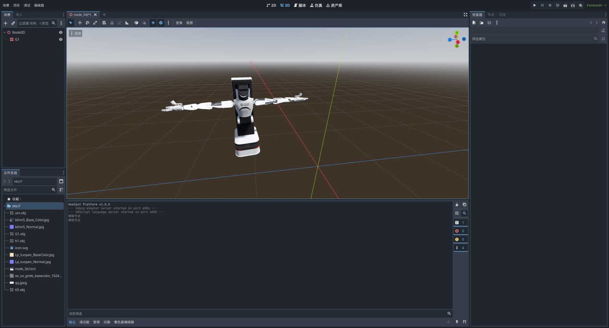

机器人系统验证与产业技术研究
中国信息通信研究院实习 · 2025.06 — 2026.08
产线运行概览
产线操作演示
末端夹具切换
插销任务与协同装配
现场设备




机器人与工业系统实践
- 参与工业巡检机器人实验室与现网功能验证，涉及远程控制、SLAM 建图与重定位、动态避障、安全保护和自动回充；整理测试过程、结果证据与技术材料。
- 参与 5G 柔性装配示范产线运维、现场演示与测试，涉及机械臂、PLC、夹具与传感器的协同运行。
- 参与工业 5G 通信测试，围绕网络接入、吞吐、时延和抖动等指标开展测试与技术材料编写。
具身智能仿真平台研究与测试

[2] 唐天旭, 于青民, 张蔚敏, 等. 具身智能仿真平台研究与测试[J]. 自动化博览, 2026(1).
围绕平台功能性与性能效率，梳理三维渲染、物理仿真、数据生成等模块的评测指标。基于项目检测材料分析帧率、资源占用、物理单帧耗时和数据生成稳定性，参与论文撰写。
负责指标梳理、结果分析与论文撰写。
5G-A 赋能工业智能应用研究与展望
[3] 唐天旭, 李宗祥, 朱璎, 等. 5G-A赋能工业智能应用研究与展望[J]. 信息通信技术与政策, 2025, 51(11): 10-16. DOI: 10.12267/j.issn.2096-5931.2025.11.002.
参与工业智能应用与 5G-A 技术相关研究及稿件撰写。